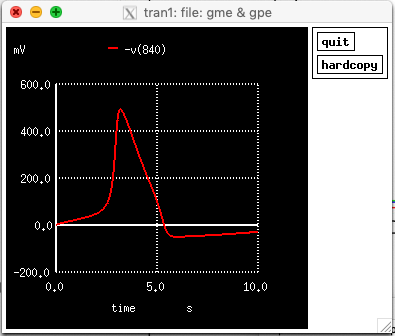
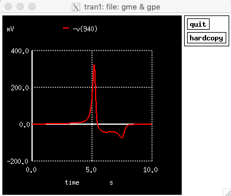

The HSPICE code for the paper:
Massobrio G, Martinoia S, Massobrio P (2018)
Equivalent Circuit of the Neuro-Electronic Junction for Signal
Recordings From Planar and Engulfed Micro-Nano-Electrodes.
IEEE Trans Biomed Circuits Syst 12:3-12
http://dx.doi.org/10.1109/TBCAS.2017.2749451
is in the file Listing_TBCAS.sp
This file was contributed by Paolo Massobrio.
Note from the ModelDB Administrator:
Although the file was developed with HSPICE it was found to also run under the
free ngspice available from sourceforge for all major platforms (linux/unix, mac, mswin):
http://ngspice.sourceforge.net/docs.html
You can run the default simulation with a command like (after the sourceforge pkg binary for the mac was installed):
/Applications/ngspice/bin/ngspice -a -r output1.dat Listing_TBCAS.sp
And then at the spice command prompt type the following:
...
ngspice 1 -> plot -v(840)
ngspice 2 -> plot -v(940)
ngspice 3 ->
(I found the minus sign provides the same orientation as the solid black and red traces in figure 2 in the paper. The mV units labeled in the graphs below are apparently a typo because if microVolts instead, the traces match the paper.

